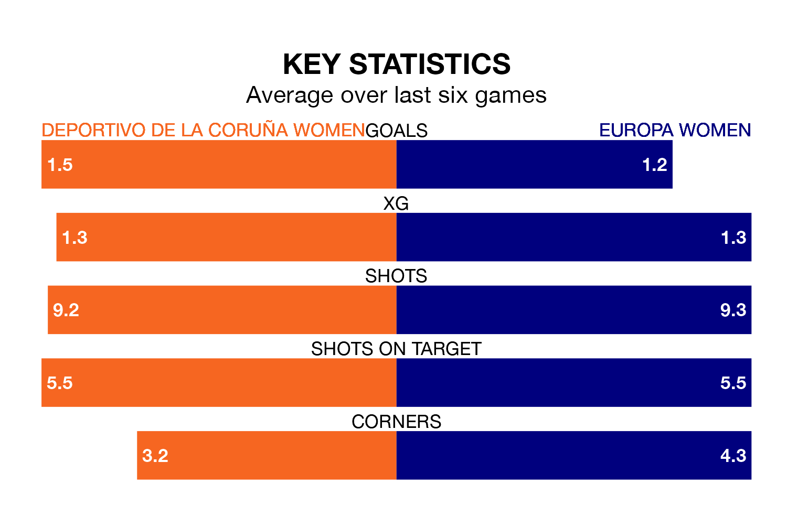

Relegation candidates Europa Women face a challenge away against high-flying Deportivo de La Coruña Women at Ciudad Deportiva de Abegondo-Campo 2 on Sunday.
Europa Women are 12th in the Primera Federación Femenina table, and have picked up five wins and two draws in their 22 games to date.
Deportivo de La Coruña, meanwhile, are second in the standings with 48 points, having won 14 and drawn six, and are level on points with table-toppers Barcelona II Women.
With 36 goals in 22 games so far this season, Deportivo de La Coruña are the league's joint-second-highest scorers with 1.6 goals per game. And they are conceding fewer than average, letting in 19 goals at a rate of 0.9 per game.
Europa, meanwhile, are below average scorers, with 1.0 goal per game, compared to a league average of 1.2. They have conceded 2.0 goals per game.
The hosts are in reasonable form in the Primera Federación Femenina, with three wins and two draws from their last six games.
With a win and a draw over that period, the away side's form is much worse – they have taken four points from 18, compared to Deportivo de La Coruña's 11.
Deportivo de La Coruña's last match was on March 23, a 2-2 draw against Osasuna Women.
Europa lost 1-0 against Logroño Women last time out, on Sunday.
Updated: 10:31 (UTC), 31/03/24